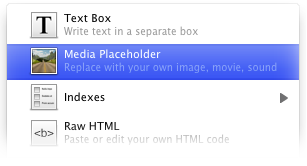

Media Placeholder
A media placeholder is an object that you use to temporarily hold the place of media that you wish to add to your site. It can be replaced by an image, video, audio, or flash file.

To add a media placeholder, from the "objects" menu choose "media placeholder" you can then add any media you would like to that object.
You can do that by choosing the media in the inspector and dragging it into the media placeholder object.
Or you can click the object to select it, then go to the Object inspector in the Inspector and choose a file (or external URL) to load where the placeholder is.